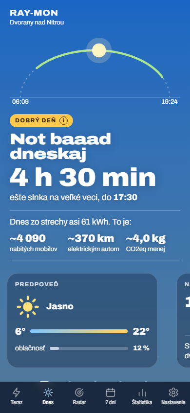
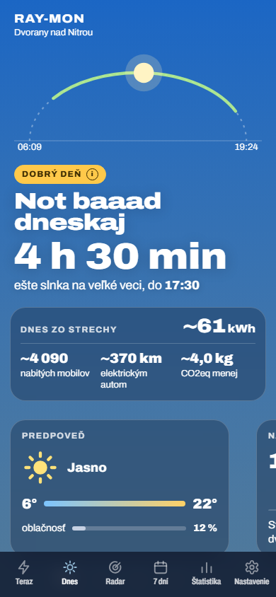
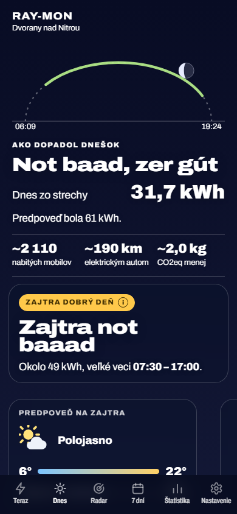
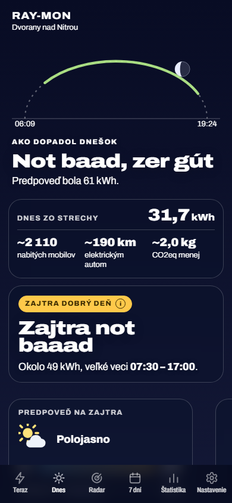

Karta Dnes: „Dnes zo strechy“ ako bublina
Návrh 17. 11. 2026, jeden variant. Celé obrazovky skutočnej appky (fixtures testov, 390 × 844), vľavo dnes, vpravo s bublinou. Mení sa len blok „Dnes zo strechy“, výpočty a čísla ostávajú.
Cez deň (13:00)


Večer (20:30)


Čo sa mení
- Veta „Dnes zo strechy asi 61 kWh. To je:“ sa rozdelí na štítok a veľké číslo, „asi“ nahradí vlnovka.
- Čiary nad a pod blokom zmiznú, oddeľuje ho sklo.
- Večer sa riadok
#mz-gradeneukazuje osobitne, jeho číslo je v bubline. - Pre čítačku ostáva jeden text: „Dnes zo strechy asi 61 kWh“ a tri prirovnania.
- + Číslo dňa (kWh) je čitateľné na prvý pohľad, nie schované vo vete.
- + Cez deň aj večer je na tom istom mieste.
- − Cez deň je blok vyšší (bublina má vnútorný okraj), pás kariet sa posunie nižšie.
- − Večer sú pod sebou dve sklá (bublina a zajtrajšok). Odlišuje ich len obsah.